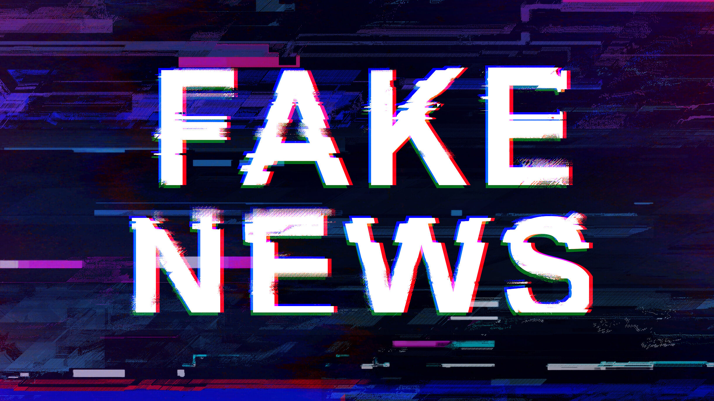

Nep Nieuws

Op deze pagina leer je alles over Nep Nieuws
Wat is Nep Nieuws??
Nepnieuws is informatie die niet waar is, maar wordt verspreid alsof het echt nieuws is.
Het wordt vaak gemaakt om mensen te misleiden of te beïnvloeden.
Nepnieuws kan er geloofwaardig uitzien, waardoor het lastig te herkennen is.
Daarom is het belangrijk om altijd de bron te controleren.
Waar Vindt je Nepnieuws??
Nepnieuws vind je vaak op sociale media zoals Facebook, Instagram en TikTok.
Het kan ook staan op onbekende websites die eruitzien als echte nieuwssites.
Soms wordt het gedeeld via WhatsApp-berichten of e-mails.
Ook blogs en forums kunnen nepnieuws bevatten als de informatie niet gecontroleerd is.
Hoe herken je Nepnieuws??
Je kunt nepnieuws herkennen door eerst te kijken of de bron betrouwbaar is.
Controleer of andere bekende nieuwswebsites hetzelfde bericht delen.
Let goed op overdreven titels of woorden die sterke emoties oproepen.
Kijk ook of er spelfouten of vreemde zinnen in het artikel staan.
Controleer ten slotte de datum en of er bewijs of bronnen bij het bericht worden gegeven.
Hoe is Nepnieuws ontstaan??
Nepnieuws bestaat eigenlijk al heel lang, zelfs voordat het internet bestond.
Vroeger verspreidden mensen soms onjuiste verhalen via kranten of mond-tot-mond om anderen te beïnvloeden.
Met de komst van het internet begon nepnieuws zich sneller te verspreiden via websites en e-mails.
Sociale media hebben het nog makkelijker gemaakt om informatie snel met veel mensen te delen.
Hierdoor kan nepnieuws zich binnen korte tijd over de hele wereld verspreiden.
Sommige mensen maken nepnieuws bewust om geld te verdienen of meningen te sturen.
Daarom is het tegenwoordig een groter probleem dan vroeger.
Wat zijn de gevolgen van Nepnieuws??
Nepnieuws kan ervoor zorgen dat mensen verkeerde informatie geloven.
Hierdoor kunnen ze slechte of verkeerde beslissingen nemen.
Het kan ook zorgen voor angst, paniek of boosheid bij mensen.
Soms kan het vertrouwen in echte nieuwsbronnen afnemen.
Nepnieuws kan ook invloed hebben op belangrijke dingen zoals verkiezingen.
Daarnaast kan het ruzie en verdeeldheid tussen groepen mensen veroorzaken.
Daarom is het belangrijk om nepnieuws te herkennen en niet zomaar te delen.
Wat kunnen wij doen om Nepnieuws tegen te gaan??
Om nepnieuws tegen te gaan, is het belangrijk dat mensen altijd controleren of de bron betrouwbaar is.
Lees niet alleen de titel, maar ook het hele artikel om de juiste informatie te begrijpen.
Vergelijk het nieuws met andere betrouwbare nieuwsbronnen.
Deel geen berichten als je niet zeker weet of ze waar zijn.
Meld nepnieuws op sociale media zodat het kan worden onderzocht en verwijderd.
Leer kritisch na te denken over wat je online ziet en leest.
Scholen en ouders kunnen helpen door mensen te leren hoe ze nepnieuws herkennen.
Samen kunnen we ervoor zorgen dat nepnieuws minder snel wordt verspreid.